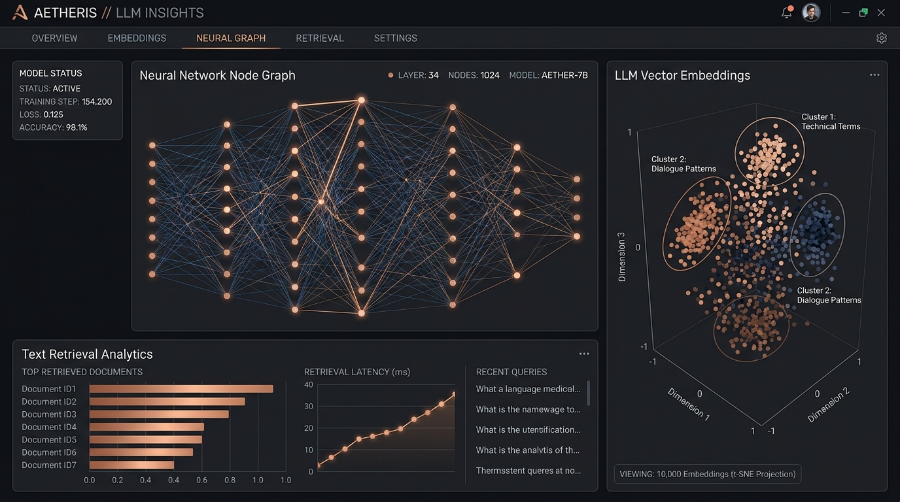
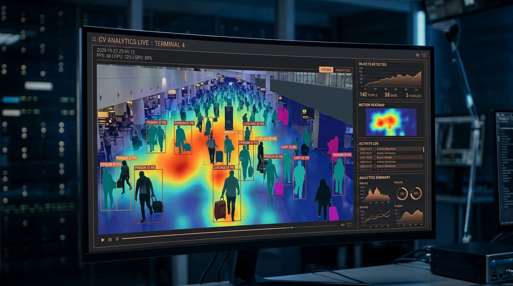
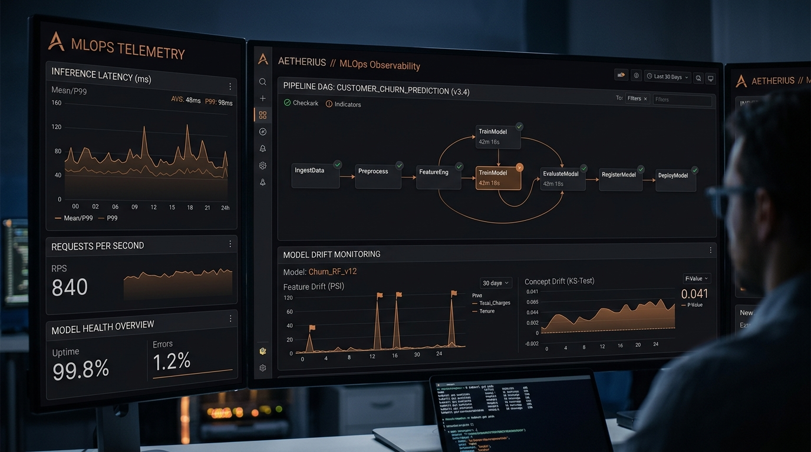

I’m a B.Tech CSE student specializing in Artificial Intelligence & Machine Learning, focused on building strong foundations in Python, data science, statistics, and machine learning.
My current work spans NumPy, Pandas, data preprocessing, visualization, and Jupyter-based ML experimentation. I’m actively developing practical projects and expanding toward end-to-end machine learning and production-ready AI systems.
Custom domain-specific fine-tuning (LoRA, QLoRA), embedding quantization, and hybrid semantic search vector databases (Pinecone, Qdrant).
Real-time object detection (YOLOv8), semantic segmentation, facial recognition, and TensorRT edge quantization for mobile and IoT devices.
Kubeflow & Airflow DAG orchestration, automated model drift monitoring, Triton Inference Server scaling, and CI/CD for ML models.
Time-series forecasting, tabular gradient boosting (XGBoost, LightGBM), anomaly detection, and automated feature engineering pipelines.
Autonomous decision-making agent design, PPO/DQN algorithm implementations, multi-agent simulations, and robotic control systems.
Model interpretability (SHAP, LIME), bias auditing, RLHF alignment, and robust adversarial defense against prompt injection attacks.
Type a prompt below to run real-time inference on our lightweight browser neural sentiment model:
Real-time visual node signal propagation & hidden layer weight activation inspector:

LLM & RAGHigh-throughput hybrid retrieval-augmented generation framework with 4-bit vector quantization and reranking.

Computer VisionTensorRT-accelerated multi-object segmentation and 3D bounding box detection for industrial robotics.

MLOps & InfraProduction Kubernetes cluster deployment with automated data drift detection, Triton scaling, and zero-downtime rollouts.
Unified Mentor
Worked on data preprocessing, exploratory data analysis, and building baseline machine learning models using Python, Pandas, NumPy, and Scikit-Learn.
Specializing in Artificial Intelligence & Machine Learning
Building strong technical foundations in Python, Data Science, Statistics, Machine Learning, and practical AI applications through projects and experimentation.
gursimran@gursimran.ai
San Francisco, CA & Remote
GitHub • HuggingFace • LinkedIn • Scholar